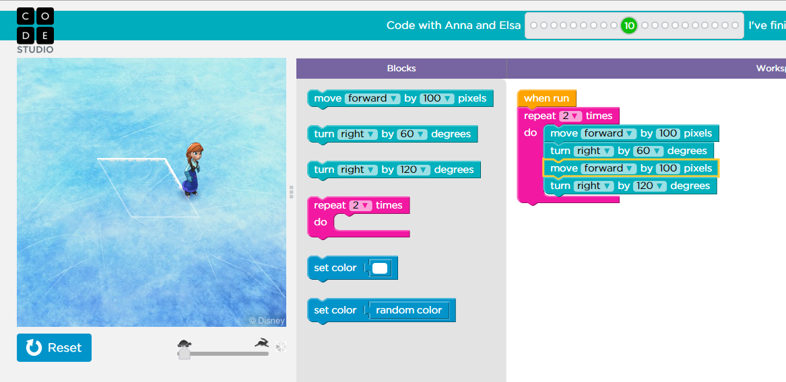

Hour of Code
We kicked things off with an introduction into the world of computing.
The Hour of Code initiative is
designed to "demystify code and show that anybody can learn the basics",
and we took advantage of it. It taught us to think in code.
It goes over things such as basic commands and loops by utilizing code-blocks
instead of actual lines of code. That way, anybody can start thinking like a
computer scientist. Although it's a good place to start, I found that
Hour of Code was too dull and not as challenging as it should be. This
is probably due to the fact that it's meant to appeal to children.
